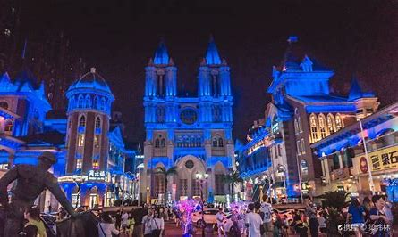

无忧无旅旅游导航网
面向大学生的旅游资讯网站，提供最新的旅游资讯，旅游攻略，旅游路线，旅游游记，旅游问答，旅游交流等信息，让您轻松寻找心仪的旅游体验！

官方微信：

世界城光谷步行街位于湖北省武汉市，全长1350米， [1]占地609亩，总建筑规模达160.23万平方米，是复合了高档写字楼、高档购物中心、高档公寓、商业步行街区以及高档住宅 “五位一体”的大型城市中心建筑群。其中商业59.23万平方米、住宅71万平方米，另有地下停车场30万平方米。 [2]
项目内有5176个沿街商铺，涵盖商业、娱乐、休闲、体育、餐饮等业态，可同时容纳100万人在这里逛街，年均客流量约1.5亿，每年为政府创造近6个亿的税收，提供5万余就业岗位，是武汉乃至华中地区当前最大的商业地产项目。不仅开启了光谷城市化的开端，更是将光谷广场四周商业、商务和城市旅游集中结合，打造武汉的城市名片和旅游地标。
世界城光谷步行街的商业景观设计，由香港迪斯尼商业景观设计原班人马打造，呈现原汁原味的欧式风情商业街。
从凯旋门开始，参观欧洲文化的标志；行走在香榭丽舍大道，欣赏法式繁华；走进德国酒吧街，一品欧式美酒；至罗马凯撒广场，回忆悠久欧洲文明；进多莫大教堂、米兰春天广场，想象浪漫婚典；漫步西班牙广场，共享西班牙的奔放；穿过热情的弗拉门戈广场，漫步到充满沉浸式表演的喷泉广场感受光影与水的艺术魅力。整条步行街上，座椅、雕塑、景观小品、街头艺术，每一个细微之处，都与周围的建筑风格相吻合，展现浓郁的异域风情，带来仿佛置身国外的感受。
主街道是世界城景观的主要展示区，中间将刻意设置一些“障碍”，汇集文化、休憩、展示、饮食等多种功能。有报亭等服务设施、椅和凳等休息设施、哈根达斯小木屋等售卖设施，还有游览的电动火车等娱乐设施。女人街、学生街、电讯数码街等次街上，不同的业态，也将有不同的景观体验。刻意设“障”，不在阻断人流，而在避免一览无余式的平淡，增添曲折有致的趣味和别样风情，让人玩得开心的同时，自然而然消费。
EDAW公司放言，不仅要将步行街打造成一个商业中心，更要将其打造成一个可以吸引全国消费者的旅游胜地，在光谷步行街再现迪斯尼商业奇迹。
面向大学生的旅游资讯网站，提供最新的旅游资讯，旅游攻略，旅游路线，旅游游记，旅游问答，旅游交流等信息，让您轻松寻找心仪的旅游体验！
官方微信：